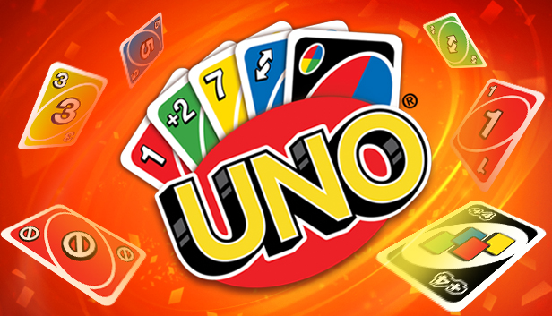

Az UNO egy népszerű kártyajáték, amelyet 2-10 játékos játszhat. A cél az, hogy minél előbb megszabadulj az összes kártyádtól.
A játékosok felváltva helyeznek le egy kártyát a középre, amelynek színének vagy számának meg kell egyeznie az aktuálisan játszott kártyáéval. Különleges kártyák is vannak, mint a "Váltás" (amely megváltoztatja a játék irányát), a "Szünet" (amely megállítja a következő játékost), és a "Vegyél fel 2"-t (amely két kártyát ad a következő játékosnak). megszabadulj az összes kártyádtól.
Amikor egy játékos már csak egy kártya marad a kezében, ki kell mondania, hogy "UNO", különben büntetést kap. Az első játékos, aki minden kártyáját letette, nyeri a játékot.
